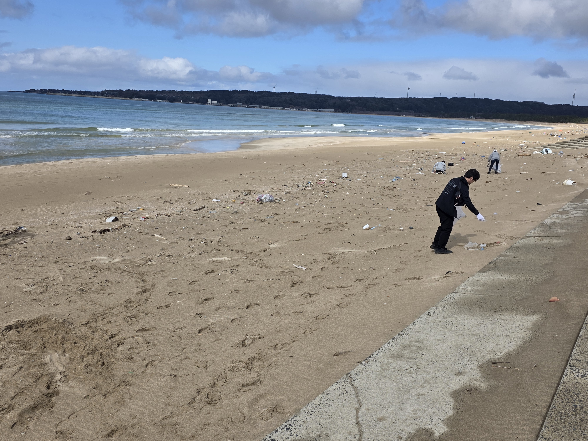
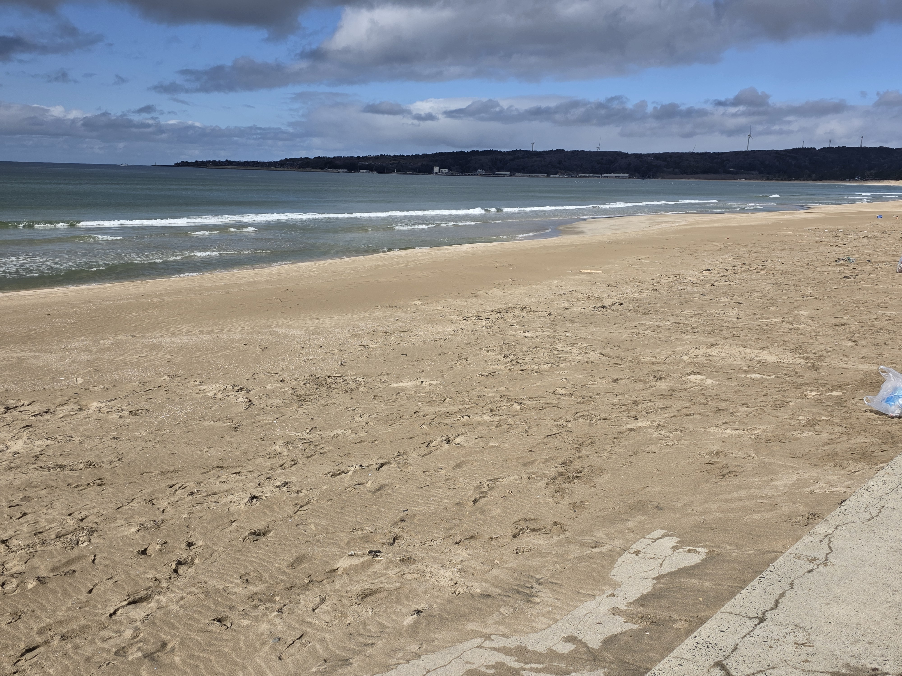

Return to Blue
Interactive Artwork
BEFORE AFTER


← Drag to Reveal →
Scroll
Overall Impact
Our Collective Effort
100People
Total Volunteers
4Hours
Total Cleaning Time
500Kg
Total Debris Collected
Activities
Traces of Action
2026.03.14
志賀町海岸清掃
志賀町の海岸にて、地元ボランティアとともに漂着したプラスチック片や大型の漁具を回収。本来の美しい砂浜の姿が少しずつ見えてきました。

Create Your Artwork
ビフォーとアフターの写真をアップロードしてください